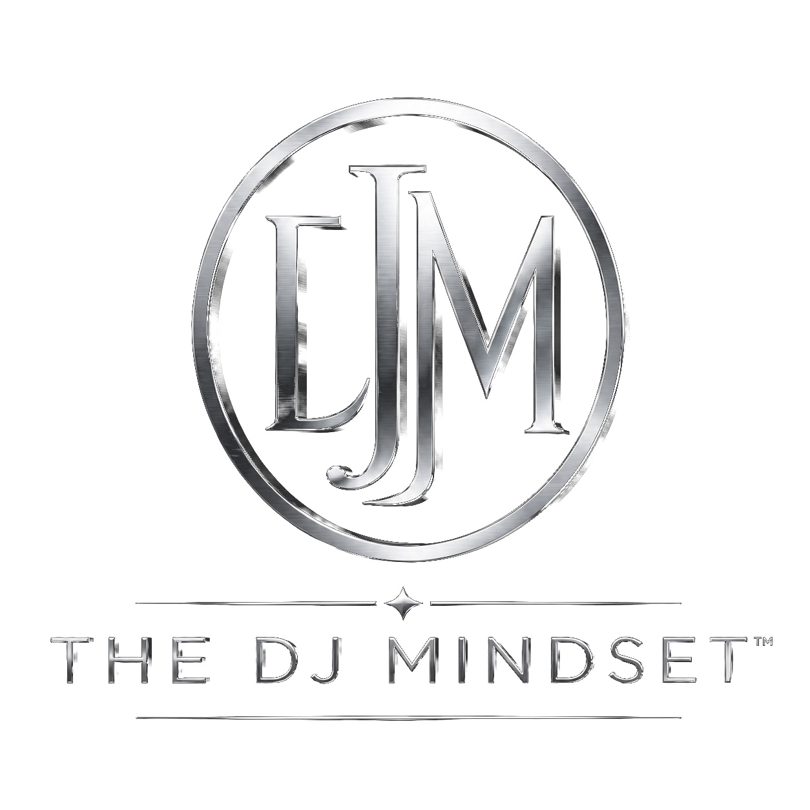

Trust weakens.
People stop believing the motive behind the message.

Book Dr. Daryl →Leadership Development • Human Connection • Live Experience
Great leaders think like great DJs.
A leadership development framework that helps leaders solve leadership disconnect by learning how to read the room, control the energy, mix with purpose, and leave people wanting more.
After years of practice and research, it is clear:
is one of the biggest reasons teams struggle, missions stall, and potential is wasted.
Leadership disconnect happens when there is a gap between what leaders intend and what people actually experience.
People stop believing the motive behind the message.
The room is present, but it is not moving together.
The mission becomes unclear and people disconnect.
Leaders may hold the position while losing the room.
The Framework
Understand people before leading them.
Build trust and influence so people are ready to move.
Move people toward a shared goal with timing and alignment.
Create impact that lasts after the moment is over.
The Experience
The DJ Mindset™ can be delivered as a keynote, workshop, leadership retreat, professional development session, or customized experience for organizations ready to improve trust, engagement, culture, and alignment.
Meet the Founder
Dr. Daryl Crosby is a professional whose work bridges leadership, emotional intelligence, and creativity. As the creator of The DJ Mindset™, he is building a movement designed to help people avoid leadership disconnect.
His work is the sum of everything he has lived: teaching shaped his ability to make complex ideas clear, administration taught him the realities of leading people through change and pressure, and nearly two decades as an award winning professional DJ taught him how to read rooms, connect diverse audiences, and create experiences that move people.
He has studied leadership, been inspired by it, challenged by it, and even hurt by it. That is why this work is personal. Through The DJ Mindset™, Dr. Crosby develops workshops, keynotes, and learning experiences that blend research, reflection, and rhythm.
Book Dr. Daryl
Every great event begins with understanding the room. Great leadership starts the same way. Tell us a little about your organization so we can create the right experience.
Every great performance begins with someone willing to start the conversation. We’ll personally review your information and follow up within two business days.
Leadership is a platform, not a pedestal.
Move People. Move Missions.
The future of leadership will not be built by people who simply manage teams.